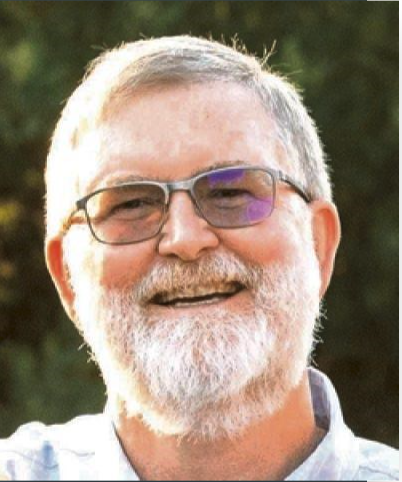

E-SYSTEMS/RAYTHEON RETIREES LUNCH GROUP
By Eileen Wahlstrom
January 25, 2023
Present: 24
First Time: John Butler, John Graves, Arnold Flores, Mark Brant
Long Time: Lenny Holt
Guests: None
SICKNESS:
Jesse Gilbert : has been hospitalized. He fell, but, no injuries from the fall, however, he said he just didn’t feel right. He’s been getting different tests.
Dottie Vaughn : Brenda, Dottie’s daughter, said she is doing better from her fall but has moved to a memory care/assisted living residence. She just celebrated her 95th birthday on December 31st
Dottie Vaughn
The Crossings
3201 Karnes Rd.
Flower Mound, TX 75022
Room 106
Deaths
Phil Evans
June 1954 – January 8, 2023

On Saturday, 7 January, Phil Evans passed away after many years of health issues. Both Phil and his wife Beth worked for E-Systems/Raytheon (they both started at the Greenville location and then transferred to Garland).
Obituary: Click here
Glenn Shahan
February 1936 -January 9, 2023
Glenn B. Shahan, 86, was called home by his Lord and Savior on January 9, 2023. Glenn was born to Roy and Gertrude Shahan on February 16, 1936 in San Angelo, Texas. He was preceded in death by his parents, his older brother Earl (Gail) and Norman (Rebecca), grandson Nick Tripp, and Janis Shahan, the mother of his children, Wes and Melinda.
Glenn is survived by his loving wife Linda Parker Shahan of Killeen, Texas; his son Wesley (Peggy) Shahan of Aledo, Texas; his daughter Melinda (Rusty) Tripp of Keller, Texas; granddaughter Andi (Bret) Ramer of Aledo, Texas; granddaughter Rebecca (Payton) Kirkpatrick of Colleyville, Texas; grandson Jacob Shahan of Aledo, Texas; great-grandson Layton Ramer of Aledo, Texas; and future great-grandson Knox Kirkpatrick. He is also survived by Linda’s children Laurie (Brad) Kent of Leander, Texas; Randy (Allison) Culp of Salado, Texas and grandchildren, Sydney and Marin Kent, and Easton and Cannon Culp. Also surviving is his sister Helen Adams of The Hills, Texas as well as numerous nieces and nephews.
Glenn graduated from Denver City High School in 1954. He attended Texas Tech University and graduated with a Bachelor of Science in Electrical Engineering in 1959, and obtained his Master’s Degree in Electrical Engineering in 1965 from Southern Methodist University. Glenn had a successful career at E-Systems where he was employed for 30 years. After retiring, he worked part time for Weatherford College teaching digital systems.
To say that Glenn loved the game of golf would be an understatement; he has probably hit more practice balls on the range than the average touring pro. Glenn belonged to Brookhaven Country Club, Willowbrook Country Club and his beloved Van Zandt Country Club in Canton, where he was a member for over 35 years. Throughout these years, he probably never made an enemy. This would also be where he earned the nickname Oney after the song by Johnny Cash. Glenn competed at a scratch level for a lot of years, and qualified for the Texas State Amateur several different years. Later in his life, while he didn’t play as much, you could still find him on the driving range working on his swing.
Another love of his was hunting. During the times his father Roy used to take the boys, Earl, Norman and Glenn to Sonora, Texas for their annual hunt, the competition was fierce to see who would get the biggest buck. As Glenn’s son, Wes, reached age nine, he started taking him along to introduce him to hunting. Over the years, they spent multiple days a year somewhere out in the woods hunting. Glenn especially loved the trips to the mountains of Colorado, Wyoming, Montana and even British Columbia, Canada when they would stay in tents. Not until the last 15 years did they finally put a wood stove in the cook tent for heat. You could expect, when going deer or elk camping with Glenn, there would be a campfire to sit around in the evening where he was sure to sip on red wine and swap lies from the day in the field.
Glenn loved to spend time with family and friends, but most of all his grandkids. “Pepaw” or “Mr. Glenn” was at almost every ballgame, swim meet, cheer and gymnastic competition. The memories that were made will forever be in our hearts. Glenn’s contagious laugh and unconditional love will always be missed.
A Celebration of Life will be on February 11, 2023 at 11:00 am at Crawford Bowers Funeral Home in Killeen, Texas. Visitation will be one hour before the service. Donations in lieu of flowers can be made to West Texas Boys Ranch in San Angelo, Texas. (www.wtbr.org).
Fond memories and expressions of sympathy may be shared at www.crawfordbowersfuneralhome.com for the Shahan family.
Obituary: Click here
Bobby Daniels
January 2023
Bobby Daniels had a massive heart attack at his home and passed away. Memorial Service for Bobby Daniels
Saturday, February 4, 2023
Time: 11 AM
Location: Mount Carmel Missionary Baptist Church
3122 Metropolitan Avenue
Dallas, Texas 75215
Announcements
Raytheon Combines Business Units
Raytheon to Combine Missiles and Defense Division with Intel and Space Business - Defense One
Raytheon Technologies will combine its missiles and defense division and intelligence and space division into a single business unit, the company announced Tuesday.
The move comes as the company looks for ways to cut costs amid high inflation and supply chain disruptions that executives expect to ease later this year.
“This will better align us with our customers’ needs and allow us to better collaborate on next-generation technology,” CEO Greg Hayes said Tuesday during the company’s quarterly earnings call.
The reorganization will create three divisions at Raytheon Technologies: Collins Aerospace, Pratt & Whitney, and Raytheon.
Raytheon also named COO Christopher Calio its president effective March 1. Calio is overseeing the merging of the missiles and defense and intelligence and space divisions.
Dallas College Emeritus program
Joe Sladecek reminded us all about the Dallas College Emeritus program. Check it out. Lots of free benefits for seniors. Senior Adult Programs (Emeritus) – Dallas College
Tax Documents
1099 Tax Document available on the raytheon.benefitcenter.com website. After you login (if you have created an account), from the HOME screen, scroll down to “Connect Me To”…”Bank of New York Mellon.” Scroll down to see your tax forms.
OR…..just wait on the mail.
2022 Tax Forms 2023-01-11T17:20:39Z
Original 2022 1099R, W-2 and 1099-MISC tax forms will be mailed by January 31st, 2023.
Medical Claims for reimbursement can be mailed to:
Alight Smart Choice Solutions
PO Box 64009
The Woodlands, TX
77387
Paper Pension Statements No More
NOTE:
Paper pension statements will not be mailed out any longer. You must now view your pension statement on rtxpensioncenter.com. If your direct deposit looks off, better check. Some people have reported being double charged for their medical deductions (Dental, etc.).
Benefits Administrator Change
This info was posted on our Facebook group.
Alight has a benefits "Gateway" website that will be used for benefits administration. If you haven’t created an account yet you can use this link to do so, (https://rtxhealthyyou.com/enrollment-2"). The instructions indicate to go to www.yourtotalrewards.com/rtx and select "New user?". The "New user?" selection links to a couple of identifying questions and then steps you through the account setup. It recognized me and I was able to set up my account so I could create my profile and preferences. There’s also an online chat feature to talk with a benefits representative and find out additional details about benefits changes. They had my old employee email address in my profile and I had to call Alight to get that corrected (800-243-8135). Be sure to check your beneficiary information. This was blank for me so I corrected that.
Alight will manage the medical reimbursement and (if it works like intended) we will be able to check our DDB balance, submit claims, authorize direct deposit, etc. online.
RTX is also moving the 401K administration from Fidelity to Alight. The 401K change to Alight will not impact you if you've rolled over your 401K to personal IRA. www.yourtotalrewards.com
IF YOU NEED HELP SETTING UP YOUR ALIGHT ACCOUNT, REIMBURSEMENT CLAIMS, DIRECT DEPOSIT, ETC. PLEASE EMAIL ME AT emmawahlstrom@aol.com. TERRY GAUS HAS OFFERED TO HELP THE RETIREES WHO MAY HAVE QUESTIONS. I CAN ALSO HELP NAVIGATE THE SWAMP IF YOU NEED ASSISTANCE.
Note – Gary Hunt sought assistance with setting up his account; Terry and Gary got together via a remote desktop hookup the following week and were successful in bringing the setup process to a successful conclusion.
Eileen continues to collect eye glasses and hearing aids for donation to the Lion’s Club. Thank you all who have donated.
Note – several members brought old sets of eyeglasses to the September meeting. Terry gathered them and later coordinated a hand-off to Eileen in early October
Our next luncheon will be February 22nd. Tell your fellow retirees! Bring a Guest!!!
Eileen Wahlstrom
E-SYSTEMS/RAYTHEON RETIREES LUNCH GROUP
By Eileen Wahlstrom
December 28, 2022
Present: 16
First Time: none
Long Time: Sandy Gennovese, Don Wilson
Guests: Wesley Marvin (Darrel Lancaster’s nephew), Estella Wilson (Don’s wife)
SICKNESS:
Linda Descanio (Peter’s wife – Breast Cancer)
Lenny Holt back problems, having surger
Deaths
Mike Barron
February 1957 – December 2022
Obituary: Click here
Thomas Jack Sanders
February 1955 - December 2022

Thomas Jack Sanders, beloved father and husband, passed away peacefully at home surrounded by family on December 6, 2022, after a long and courageous battle against kidney cancer.
Born on February 18, 1955, in Mercedes, Texas to John and Dorothy Sanders. Tom graduated from Donna High School in 1973 and later went on to graduate from Texas A&M with a B.S. in Computer Science in 1987.
After graduation, Tom began working for Boeing in Wichita, Kansas. In 1990, he moved to Dallas to work at E-Systems and later helped develop and manage ORION for Raytheon. He retired in July 2022 after more than 30 years as a network engineer.
A devout Christian, Tom helped teach children's church at Stone-briar Community Church for over 14 years in various capacities. He had absolute faith in Jesus as his Savior.
Tom is survived by his loving wife of 39 years, Nancy Sanders, his three children, Aaron Sanders and his wife Alex and son Sebastian, Hannah Kovich and her husband Wyatt and children Rose, Hazel, Logan, and Cora, and Nathan Sanders.
Obituary: Click here
Announcements
October was the cut off for medical reimbursement claims for 2021 claims. Retirees are continuing to have problems.
From Christine Berry
Just passing on an email I received regarding the chairs for 35+ years retirees…
I will be your contact person at Standard Chair from now on.
To process this order, we need a purchase order from Raytheon.
About a month ago, I took over the task of organizing and processing all Raytheon retiree orders.
We were able to obtain a primary contact to receive purchase orders.
Your order is on Summary B2. We are currently waiting on a PO for Summary B1.
Once I receive the PO, your order will be processed, and you will be assigned a ship date.
If you do not hear from me by September 23, 2022, with your ship date please contact me.
Our standard shipping once we receive the purchase order is 4-6 weeks.
Please know I’m working diligently to process and ship over 500 in-house Raytheon retiree orders.
We apologize for the delay and any inconvenience this has caused.
**We have processed and received ship dates for 100s of retirees.
**If you know a retiree that has been waiting for their chair and hasn’t received any information, please give them my contact information.
Thank you,
Suzanne Pelkey, Customer Service Representative
Standard Chair of Gardner Inc
One S Main Street Gardner, MA 01440
978-632-1301 Phone
978-632-1345 Fax
Suzannep@standardchair.com

Medical Claims for reimbursement can be mailed to:
Alight Smart Choice Solutions
PO Box 64009
The Woodlands, TX
77387
Paper Pension Statements No More
NOTE:
Paper pension statements will not be mailed out any longer. You must now view your pension statement on rtxpensioncenter.com. If your direct deposit looks off, better check. Some people have reported being double charged for their medical deductions (Dental, etc.).
Benefits Administrator Change
This info was posted on our Facebook group.
Alight has a benefits "Gateway" website that will be used for benefits administration. If you haven’t created an account yet you can use this link to do so, (https://rtxhealthyyou.com/enrollment-2"). The instructions indicate to go to www.yourtotalrewards.com/rtx and select "New user?". The "New user?" selection links to a couple of identifying questions and then steps you through the account setup. It recognized me and I was able to set up my account so I could create my profile and preferences. There’s also an online chat feature to talk with a benefits representative and find out additional details about benefits changes. They had my old employee email address in my profile and I had to call Alight to get that corrected (800-243-8135). Be sure to check your beneficiary information. This was blank for me so I corrected that.
Alight will manage the medical reimbursement and (if it works like intended) we will be able to check our DDB balance, submit claims, authorize direct deposit, etc. online.
RTX is also moving the 401K administration from Fidelity to Alight. The 401K change to Alight will not impact you if you've rolled over your 401K to personal IRA. www.yourtotalrewards.com
IF YOU NEED HELP SETTING UP YOUR ALIGHT ACCOUNT, REIMBURSEMENT CLAIMS, DIRECT DEPOSIT, ETC. PLEASE EMAIL ME AT emmawahlstrom@aol.com. TERRY GAUS HAS OFFERED TO HELP THE RETIREES WHO MAY HAVE QUESTIONS. I CAN ALSO HELP NAVIGATE THE SWAMP IF YOU NEED ASSISTANCE.
Note – Gary Hunt sought assistance with setting up his account; Terry and Gary got together via a remote desktop hookup the following week and were successful in bringing the setup process to a successful conclusion.
Eileen continues to collect eye glasses and hearing aids for donation to the Lion’s Club. Thank you all who have donated.
Note – several members brought old sets of eyeglasses to the September meeting. Terry gathered them and later coordinated a hand-off to Eileen in early October
Our next luncheon will be January 25th. Tell your fellow retirees! Bring a Guest!!!
Eileen Wahlstrom
Note: We are an independent group of Garland E-Systems/Raytheon retirees and not affiliated with the Raytheon Corporation in any way.

 Submit your Garland ESY/Raytheon stories now!!
Submit your Garland ESY/Raytheon stories now!! 
ESY Ray